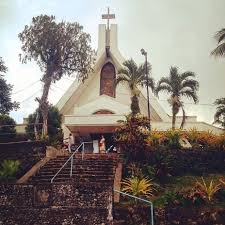
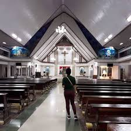
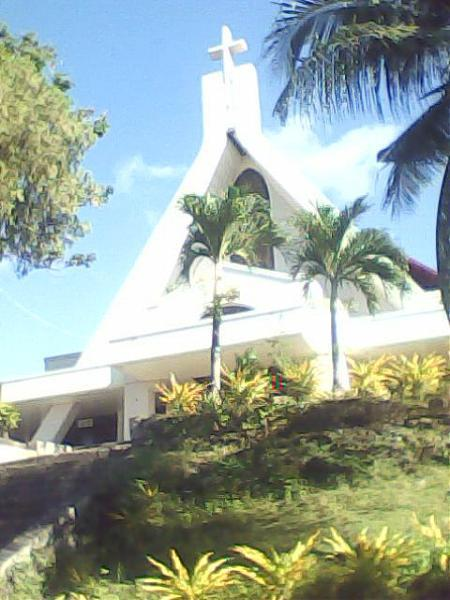
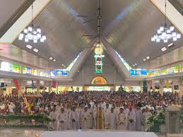

St. Vincent de Paul Parish is a well-known church in Bislig City that serves as a spiritual center for the local community. The church features a modest yet welcoming architectural design that reflects simplicity and devotion. Its interior is arranged to accommodate a large number of worshippers, providing a comfortable space for religious gatherings. The altar is designed with religious symbols that emphasize its sacred purpose. The overall atmosphere of the church is calm and reverent.
The parish is surrounded by a peaceful environment that enhances the spiritual experience of visitors. Its location within the city makes it accessible to both residents and tourists. The interior decorations include statues and images that reflect Catholic traditions. The church is often filled with natural light, creating a warm and inviting ambiance. Overall, it serves as a place of worship and community connection.


The parish was established to meet the pastoral needs of the growing Catholic community in Bislig. It falls under the jurisdiction of the Diocese of Tandag, which oversees several parishes throughout Surigao del Sur. Over the years, the church has become a focal point for religious education, social outreach, and community events.
The church’s design reflects typical Philippine parish architecture, featuring a simple yet reverent style with a bell tower and spacious nave. Its interior houses statues of saints, including St. Vincent de Paul, and serves as a gathering place for Masses, weddings, and major liturgical celebrations.


Beyond worship, St. Vincent de Paul Parish is active in charitable programs inspired by its patron’s legacy. Parish ministries often support local families through feeding programs, youth outreach, and educational initiatives. It also hosts events during the feast day celebrations that draw parishioners from across Bislig and neighboring towns.